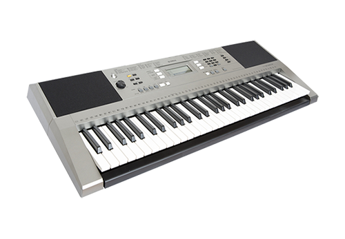
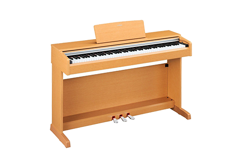

|
 |
 |
 |
 |
 |
Yamaha — одна из старейших корпораций в мире, основанная в 1897 году предпринимателем Торакусу Ямаха. История работы Торакусу Ямаха с музыкальными инструментами началась с 1887 году, когда некий мужчина попросил его, мастера по ремонту медицинских инструментов, проживающего в то время в г. Хамамацу, префектура Сидзуока, починить язычковый орган (фисгармонию). Работа с этим инструментом так захватила его, что после завершения ремонта он принял решение создать собственный образец фисгармонии. Основываясь на знаниях о строении этого музыкального инструмента, полученных в процессе ремонта, он начал вручную изготавливать каждую деталь. Спустя два месяца, он собственными силами доставил готовый орган на проверку в Институт музыкальных исследований в Токио (в настоящее время — Токийский национальный университет изобразительных искусств и музыки). Специалисты института признали, что инструмент имеет правильную форму корпуса, однако выявили ряд недостатков, в том числе нестабильность настройки. Не поддавшись разочарованию, Торакусу Ямаха решил остаться в Токио и добиться своей цели, занявшись изучением музыкальной теории и методов настройки, став особым слушателем в Институте музыкальных исследований. Через месяц напряженной учебы Торакусу Ямаха вернулся в Хамаматсу, где начал трудиться с раннего утра до позднего вечера, изготавливая свой второй язычковый орган. После повторной проверки его инструмент был признан «достойным заменить импортные аналоги».
Список товаров
Синтезаторы
|

Yamaha PSR-E353
579.99 руб. Купить |

Yamaha PSR-E453
893.00 руб. Купить |

Yamaha PSR-R200
391.00 руб. Купить |
Гитары

Yamaha FSX315C
597.00 руб. Купить |

Yamaha F310
353.00 руб. Купить |

Yamaha APX1000 CRB
2 111.48 руб. Купить |

Yamaha APX700II BL
1 297.84 руб. Купить |

Yamaha CPX500II NT
1 120.50 руб. Купить |

Yamaha F370DW TBS
1 297.84 руб. Купить |
Пианино
|

Yamaha Arius YDP-142C
2 482.00 руб. Купить |

Yamaha Arius YDP-143R
2 640.00 руб. Купить |

Yamaha Arius YDP-S31
2 158.00 руб. Купить |
 |
 |
 |
 |
 |
 |
Все товарные знаки являются собственностью соответствующих владельцев. © Plarium, 2014 - Все права защищены